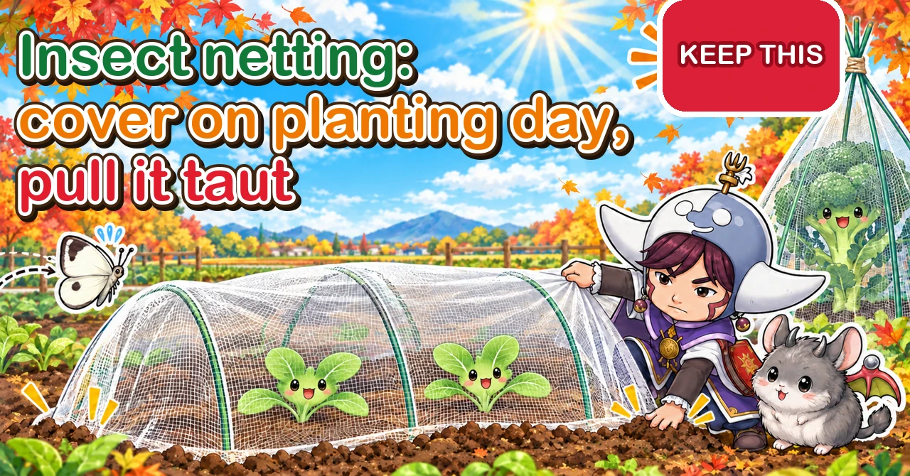
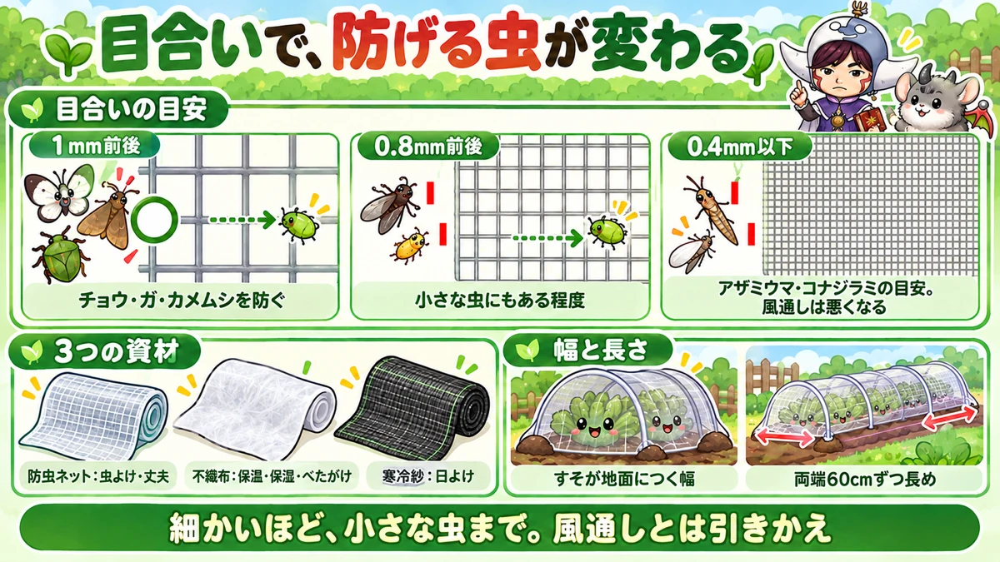
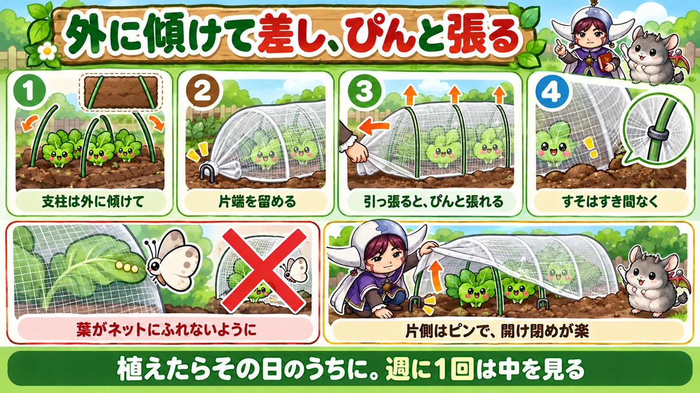
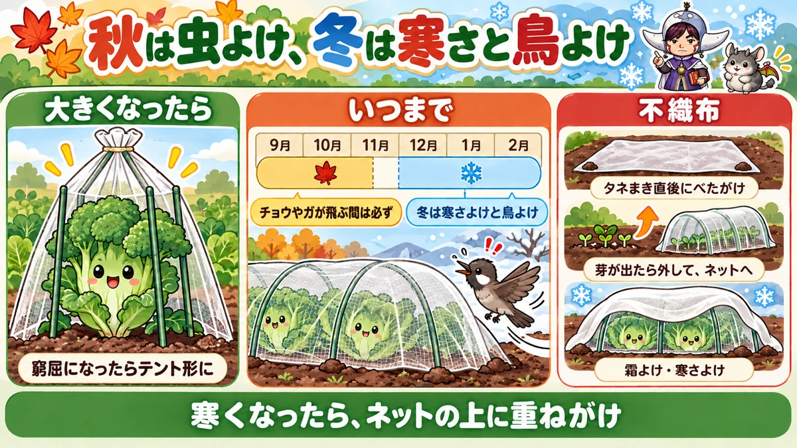

Insect netting and fleece 🥬 Choosing the mesh, putting up a taut tunnel, when to remove it, and using it in winter

🥬 "I had a net over my cabbages and they still got eaten."
🥬 "I don't know when I'm supposed to take it off."
🥬 "Every time I open my tunnel, the net slides down onto the plants."
Hello, I'm Eiko. Eight years of growing vegetables organically and without pesticides, and a teaching licence in science.
If you want autumn and winter vegetables without pesticides, insect netting is the one thing you can't do without. But how well it works depends hugely on which net you choose, how you put it up, and when you use it. The same net, put up differently, changes both how many pests get in and how much of a chore it is to open.
This article is mostly about insect netting, with how it differs from fleece and shade cloth and when to use each.
Insect netting: fine threads woven into a mesh. Lets wind and light through, keeps pests out, strong — lasts for years.
Fleece (horticultural fleece, row cover): fine fibres matted into a thin cloth. Light, holds warmth and moisture, can lie directly on the crop. Tears easily.
Shade cloth (cheesecloth-like netting): a coarse cloth for shade and some pest protection; the colour and weave decide how much sun it blocks.
Mesh sizes: about 1 mm stops butterflies, moths, stink bugs and larger beetles — the standard for cabbage caterpillars and armyworm moths. About 0.8 mm helps somewhat against small insects but won't stop them all. 0.4 mm or finer is the guide for thrips and whitefly — but air flow suffers.

What this diagram says （図解の文字）
- The mesh decides which insects you keep out
- "Mesh guide": "about 1 mm — stops butterflies, moths and stink bugs" ／ "about 0.8 mm — some effect on small insects" ／ "0.4 mm or less — the guide for thrips and whitefly; poorer air flow"
- "Three materials": "insect netting: keeps pests out, strong" ／ "fleece: warmth, moisture, lays directly on crops" ／ "shade cloth: shade"
- "Width and length": "wide enough for the edges to reach the ground" ／ "60 cm (2 ft) extra at each end"
- "The finer the mesh, the smaller the insects it stops — at the cost of air flow"
① Through the year (central Japan)
- February–March: fleece over newly planted potatoes and spring transplants against frost; extra layers over overwintering greens
- April–May: net summer-vegetable transplants while they're small; take fleece off once frost risk has passed
- June–August: shade cloth for summer sowings and seedlings; clean and store nets you're not using
- August–September: fleece laid directly over autumn sowings; a net tunnel once they've come up; net transplants the day you plant them
- September–November: netting is essential. Look inside once a week; reinforce before typhoons and storms
- November–December: tall plants get a tent-shaped cover; add fleece on top as it gets colder
- December–February: protection from cold and birds; add a layer on the coldest nights
② What insect netting does
Its main job: stop eggs being laid
Netting doesn't kill pests. It stops butterflies, moths, stink bugs and other flying insects from reaching your plants and laying eggs. The caterpillars that riddle autumn brassicas hatch from eggs their parents laid on the leaves. Keep the parents out and there are no eggs and no caterpillars — in a pesticide-free garden, nothing works better.
From planting until around October is the peak time for pests on autumn and winter crops. Leave plants uncovered then and the leaves are full of holes in no time.
It also protects from wind, cold, birds and rain
- Wind: softens strong gusts that rock or flatten young plants
- Rain (a little): breaks the force of heavy rain, and cuts down soil splash
- Cold (a little): keeps icy wind off the leaves — far less warmth than plastic, but better than nothing
- Birds: stops birds stripping leaves in winter, when food is scarce
What netting can't stop
- Insects smaller than the mesh (aphids, thrips — depending on the mesh)
- Pests already in the soil (cutworms, chafer grubs, armyworm pupae)
- Eggs or caterpillars that came in on the transplants
- Insects that get in through gaps at the edges or tears
- Eggs laid through the net where leaves are pressed against it
When netted plants still get eaten, it's almost always one of these. Netting isn't "cover it and forget it" — think of it as one measure among several.
③ Choosing the mesh
Finer stops smaller insects
The usual home-garden net has a mesh of about 1 mm. That stops butterflies, moths, stink bugs and larger beetles — enough to begin with for cabbage caterpillars and armyworm moths.
But very small insects like aphids and thrips slip through 1 mm. In commercial greenhouses, a mesh of 0.4 mm or less is recommended against whitefly and thrips. Around 0.8 mm has some effect on small insects but is said to be hard-pressed to stop them completely.
Finer means less air
A finer mesh lets less wind through. The inside gets humid, and in summer or late-summer heat it can get hot enough to stress the plants. A little less light gets through too. So finer isn't automatically better:
- Mainly cabbage caterpillars and armyworms? About 1 mm
- Aphids terrible every year, or want to keep out insects that spread viruses? A finer mesh
- Transplants going out in still-hot September? Don't cook them under too fine a mesh
Silver threads and coloured nets
Some nets have silver threads woven in, using the fact that aphids and others dislike the glinting reflection. Some come in colours such as red, claimed to deter particular pests. Results vary by pest and place — trials have found clear effects in some cases and none in others. Choose by mesh first, and treat silver threads or colour as a bonus.
Working out width and length
- Width: the edges must lie firmly on the ground once it's over the hoops. For a bed about 2–2¼ ft (60–70 cm) wide, a net about 6 ft (180 cm) wide leaves enough to reach the soil even with a slightly taller tunnel.
- Length: the bed length plus enough to anchor each end — about 2 ft (60 cm) at each end, 4 ft (120 cm) in all. A 10 ft (3 m) bed needs about 14 ft (4.2 m).
Too short and you get gaps at the edges or ends — and that's where pests get in. A little spare is just right.
④ Putting up a tunnel
What you need
- Insect netting
- Tunnel hoops (thin bendy hoops or sturdier arches)
- Clips to hold the net to the hoops
- Pegs for the edges, or soil to bury them
Thin hoops go about every 20–24 in (50–60 cm); thick hoops or arches every 3–4 ft (1–1.2 m).
Step by step
- Push the hoops in on both sides of the bed, leaning slightly outwards — an upside-down V from the end. When you tension the net, they're pulled upright and the net goes taut.
- Gather one end of the net, twist it together and push it into the ground or peg it.
- Throw the net over the hoops and spread it to the other end.
- Pull the far end tight with one hand while gathering the slack with the other. As you pull, the leaning hoops stand up straight and the net tightens.
- Peg the end temporarily, gather the excess, and fix it firmly.
- Clip the net to each hoop.
- Bury both side edges in soil or peg them down, leaving no gaps.
Why taut matters
A loose net sags each time you open it, flopping onto the plants or down onto your hands as you work. It also flaps in the wind and rubs the seedlings. A taut tunnel holds its shape — lift one edge and it stays where you put it, even more so with clips. The same method works for plastic tunnels in winter.
No gaps at the edges
Any gap at the edge lets pests in. If burying, pile the soil firmly on top. If you open it a lot, bury one side and only peg the other.
Making it easy to open
- Bury one edge in soil; just peg the other. To open, unpeg that side only
- On a taut tunnel, flip one side up over the hoops and it stays there
- Clips stop the net sliding down when it's lifted
- When you've finished, put the edge back and check for gaps
If opening is a chore, you'll check less often — and miss pests. Making it easy is part of keeping pests out.

What this diagram says （図解の文字）
- Lean the hoops outwards, pull the net taut
- ① "Lean the hoops outwards" → ② "fix one end" → ③ "pull, and it goes taut" → ④ "no gaps at the edges"
- "Keep leaves off the net" (eggs can be laid through it) ／ "peg one side for easy opening"
- "Cover on the day you plant. Look inside once a week"
⑤ When to cover, and afterwards
Cover the day you plant
Put netting on the same day you transplant, and straight after sowing. Wait "until they come up" or "until they've settled in" and a butterfly or moth may lay eggs in the meantime. Cover after that, and the caterpillars hatch inside — you'd be rearing pests under your own net.
Check plants and soil first
- Look under the leaves of transplants for eggs or tiny caterpillars
- Check the soil where you're planting for armyworm pupae, cutworms and chafer grubs
Netting only keeps out what comes from outside. Removing what's already there is how you make it work.
Look inside once a week
- Eggs, small caterpillars or aphids under the leaves?
- Dead lower leaves holding damp round the base? Remove them — they breed disease and pests
- Tears in the net, or gaps at the edges?
Keep leaves off the net
As plants grow, leaves press against the net, and butterflies and moths can lay through the mesh onto them. Build the tunnel with height to spare for the plant's full size, and once leaves start touching, add height as described in the next section.
Late-summer heat
Just after September planting, there are still midsummer-hot days. A very fine net, or fleece left on top, can trap heat until the seedlings flop.
- In hot weather, don't use too fine a mesh
- Take fleece off promptly once seedlings are up
- Check at midday on sunny days for wilting; if they wilt, water in the cool of morning or evening
- In very strong sun, a net combined with shade cloth is an option
After rain and wind — and before storms
After heavy rain or wind, nets shift, edges lift and hoops fall over; go round the next day and fix them. Autumn storms coincide with planting time. Ordinary wind rarely shifts a well-anchored net, but a typhoon can blow away net and all. Before a big storm:
- Re-clip the net firmly to the hoops
- Pile the soil on the edges thicker than usual
- Support tall plants with a slanting stake tied loosely at the base — don't tie tight
- Dig a trench about 4 in (10 cm) deep between beds so rainwater can drain away
Afterwards, check for shifts, tears and fallen hoops, and fix them straight away.
⑥ When the plants outgrow the tunnel
Broccoli, sprouting broccoli and cauliflower grow tall and by late autumn no longer fit. When they push up against the net, leaves get pressed into it — eggs laid through the mesh, and damaged leaves.
Re-cover as a tent
- Push a stake about 5 ft (150 cm) long into the ground 6–8 in (15–20 cm) from the base of the plant.
- Drape the same net over the top of the stake.
- Gather and tie the net at the top of the stake.
- Gather the bottom round the whole plant and tie it to the stake or fix it to the ground.
The stake also supports the tall plant in the wind. By late autumn there are fewer pests, so a small gap at the bottom matters less.
As harvest approaches
You'll be opening the net more often. When picking broccoli side shoots or leaves bit by bit, open only the side you're harvesting and close it straight after. Check under the leaves at the same time and it's one job instead of two.
Leave height for Chinese cabbage and cabbage
Chinese cabbage wraps tall, so its outer leaves grow upwards and touch the net; cabbage spreads sideways as it starts to head. Build the tunnel a little taller from the start.
⑦ When to take it off
Keep netting on as long as butterflies and moths are flying — roughly until mid-November in central Japan. Recent years have often been warm, and they may still fly on warm December days, so go by what you see.
In winter it has other jobs
- Shielding leaves from cold winter wind
- Stopping birds such as bulbuls stripping leaves when food is scarce, e.g. after snow
- Stopping tall plants blowing over or being loosened at the roots in strong wind
Birds can arrive in flocks and strip broccoli, cabbage or Chinese cabbage leaves in a short time. Leaving the net on through winter prevents it.
Switching to a plastic tunnel
For cold-sensitive crops, or greens you want to keep growing through winter, some growers swap the net for a plastic tunnel from about November. Plastic holds much more warmth, so on sunny days it gets too hot — open the edges to ventilate.
Layering for the cold
Netting, fleece and perforated plastic are each thin and don't hold much warmth alone, but layering adds warmth — and you can add and remove layers like clothing.
- In autumn, netting only
- As it turns cold, fleece over the netting
- In harsh climates, or for greens grown through winter, perforated plastic on top
- As spring warms up, remove them from the top down
On days with plastic on, open the edges on sunny afternoons so it doesn't overheat.

What this diagram says （図解の文字）
- In autumn it keeps off pests; in winter, cold and birds
- "When they get big": "once it's cramped, re-cover as a tent"
- "How long" (September to February, central Japan): "essential while butterflies and moths are flying" ／ "in winter, against cold and birds"
- "Fleece": "laid directly over the bed just after sowing" → "once they come up, take it off and switch to netting" ／ "against frost and cold"
- "When it gets cold, layer on top of the net"
⑧ Using fleece
Compared with netting, fleece:
- holds warmth and moisture much better
- is light enough to lie directly on the crop (a "floating" cover)
- has such a fine structure that small insects struggle to get in
- tears easily and rarely lasts for years
- lets less air through than netting
Straight after sowing
Lay fleece directly over autumn sowings and they come up more evenly. It:
- slows evaporation, so the soil doesn't dry out
- softens strong sun (September can still be midsummer-hot)
- stops heavy rain washing seeds away or beating the surface hard
- adds a little warmth on a sudden cold night
- protects just-emerged seedlings from pests
Cut it to the bed, spread it on top, and weigh down the corners and a few points along the edges with soil. Once the seedlings come up, take it off — left on, they grow leggy and get humid. Lift it gently by the corners, brushing off the soil, and switch to a net tunnel straight away.
Floating cover or tunnel
- Laid on the crop: no hoops needed. Good just after sowing, for low leafy crops, and as a quick extra layer on a cold night
- Over hoops: doesn't touch the plants, so leaves aren't damaged. Good for taller crops and long periods
Fleece laid directly can rub and damage leaf tips in the wind. For long periods, a tunnel is safer.
Late frosts in spring
Newly emerged potato shoots and fresh transplants can be scorched or killed by a late frost. On nights when frost threatens, drape fleece loosely over them. For taller potatoes, put it over stakes or a tunnel frame. On warm days, open the edges so they don't overheat.
Winter cold
In the coldest spells, fleece over the netting adds protection. You can also add it just for the nights a cold snap arrives.
Cautions
- Pressed tight onto plants it can damage leaves — lay it loosely, with slack
- Left on in warm weather, it gets humid inside and seedlings go leggy
- It tears easily — don't over-stretch it when fixing the edges
- Very cheap fleece is thin and tears quickly — choose something reasonably sturdy
⑨ Using shade cloth
Shade cloth is a coarse fabric used mainly for shade: protecting summer sowings and seedlings from fierce sun, or shading crops that like partial shade (such as myoga ginger). Some combine shade cloth with insect netting, giving both. White and black versions exist, and the weave also changes how much sun is blocked — black blocks the most. Block too much and plants go leggy, so set a limit: only the hottest weeks, or only while seedlings are small.
How it compares with plastic
- Insect netting: mainly pest protection. Good air and light. A little warmth
- Fleece: warmth and moisture. Light, can lie on the crop. Some air gets through
- Plastic: strong warmth, but ventilation is essential. Perforated plastic needs a little less attention
Choose by how cold it gets and how much time you can give it.
⑩ Making it last
Netting feels expensive at first, but looked after, it lasts for years — some growers have used theirs for over ten. You don't need a new one each time.
- Check for holes; patch small ones with an offcut of net or repair tape
- Get the mud off. If washing is a nuisance, hang it out for a few days and dry soil falls off by itself
- Dry it thoroughly, fold, tie with string, and store out of the sun
Miss a hole and pests get in next season. The pre-storage check is the first step in next season's protection.
Other uses: a summer sunshade over a work area or where you stand seedlings; a winter bird guard draped over plants waiting to be harvested; a windbreak round tall plants.
⑪ Where growers disagree, and common mistakes
Is finer mesh better? Finer stops smaller insects but gets humid in heat. Some say "fine enough for aphids"; others say "1 mm for air flow, and deal with aphids by checking." Choose by the season and what you most need to stop.
Leave it on in winter, or take it off? Some remove it once pests are gone to give more light; others keep it on for cold and birds. Where birds or wind are a problem, keeping it on is safer.
Do silver threads work? The reflection may deter insects, but how much is unclear. Mesh matters more.
Common mistakes:
- Covering a few days after planting — eggs were laid in the meantime and hatch inside. Cover straight away
- Gaps at the edges — bury or peg them firmly
- Leaves pressed against the net — eggs get laid through it. Build with height to spare; re-cover as a tent when plants grow
- Never looking inside — aphids multiplying, caterpillars lurking. Look once a week
- Leaving fleece on after seedlings emerge — leggy, humid seedlings. Take it off and switch to netting
⑫ Questions people ask
There are aphids inside the net. They can slip through a 1 mm mesh, or have come in on the transplants. Brush them off or wash them away with water. If they're bad every year, try a finer mesh.
Do summer vegetables need netting? Young cucumber and squash transplants are easily eaten by cucumber beetles, and aubergines and peppers attract aphids — a net tunnel helps while they're small. But many fruiting crops need insects to carry pollen, so once plants outgrow the tunnel and start to flower, it's usual to remove it and pick pests off by hand.
Onions and garlic? They suffer far less than autumn brassicas. But where winter cold badly scorches the leaf tips, or in cold regions, some growers use fleece, netting or a perforated plastic tunnel for cold protection. Weeds grow well inside, so open it now and then to weed.
Spinach, garland chrysanthemum, lettuce? Less than brassicas, but they do get eaten — especially just after emerging or transplanting. A net then gives peace of mind.
My net has a hole. Patch it with an offcut tied on with string or cable ties, or repair tape — the same day you find it.
Net or fleece — which should I buy? For autumn and winter vegetables, netting first: it lasts for years and does most of the work. One sheet of fleece is handy for sowing time and for frost and cold.
Can I use them on containers? Yes — small hoop-and-net sets for planters exist, or you can wrap the whole planter in a large net bag. Butterflies reach balconies too, so net leafy greens and brassicas.
Science bit: four whys 🔬
Why does mesh size decide which insects get in? It comes down to the insect's body width (at its widest) against the size of the holes. Butterflies, moths and stink bugs are too big for 1 mm. Aphids and thrips are much narrower than 1 mm and slip through. A finer mesh lets fewer through, but more threads leave narrower paths for air — keeping insects out and letting air through are always a trade-off.
Why does fleece keep plants warm? It traps a layer of air between itself and the ground. That layer holds back the heat escaping from the soil and keeps cold wind off. Fleece also lets light through, so the sun warms the ground by day and a little of that heat lasts into the night. Frost forms when the ground and leaf surfaces get very cold — so even a layer of air makes frost less likely.
Why does a taut net hold its shape? Hoops pushed in leaning outwards are pulled upright by the tension in the net — but they keep trying to spring back outwards, and that keeps pulling the net tight. Hoops and net pull against each other, holding the whole tunnel in shape. A slack tunnel has no such tug-of-war, so wind and weight soon push it out of shape.
Why do butterflies lay on leaves touching the net? A butterfly lands on a leaf and checks by smell and taste that it's the right plant before laying. If a leaf touches the net, she can stand on the outside, check the leaf just below, and push her abdomen through the mesh to lay. With a gap between net and leaf, she can't reach. That's why tunnels need height to spare.
To sum up
- ✅ Netting stops flying insects laying eggs — it can't stop pests in the soil or eggs already on transplants
- ✅ About 1 mm stops butterflies and moths; aphids and thrips can get through; finer means less air
- ✅ Wide enough for the edges to reach the ground; about 4 ft (120 cm) longer than the bed
- ✅ Lean the hoops outwards and pull the net taut; no gaps at the edges
- ✅ Cover the day you plant or sow, after checking leaves and soil
- ✅ Look inside once a week; leave height so leaves don't touch the net
- ✅ When plants grow tall, re-cover as a tent
- ✅ Keep it on while butterflies and moths fly; in winter, for cold and birds
- ✅ Fleece: laid on sowings, against frost, for winter cold — off once seedlings are up
- ✅ Before storing: patch holes, knock off soil, dry it — it lasts for years
- ✅ Before storms, re-clip and pile on more soil; stake tall plants
- ✅ Watch for heat in late summer; layer up as it gets cold
Put up with a little care, insect netting makes growing without pesticides far easier. Keep up the weekly check and the seasonal changes, and it will guard your crops from pests, cold and birds from autumn right through winter. Next time you plant out, put up a taut tunnel the same day 🥬
Thank you for reading!